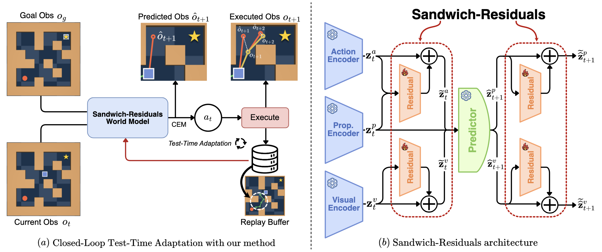
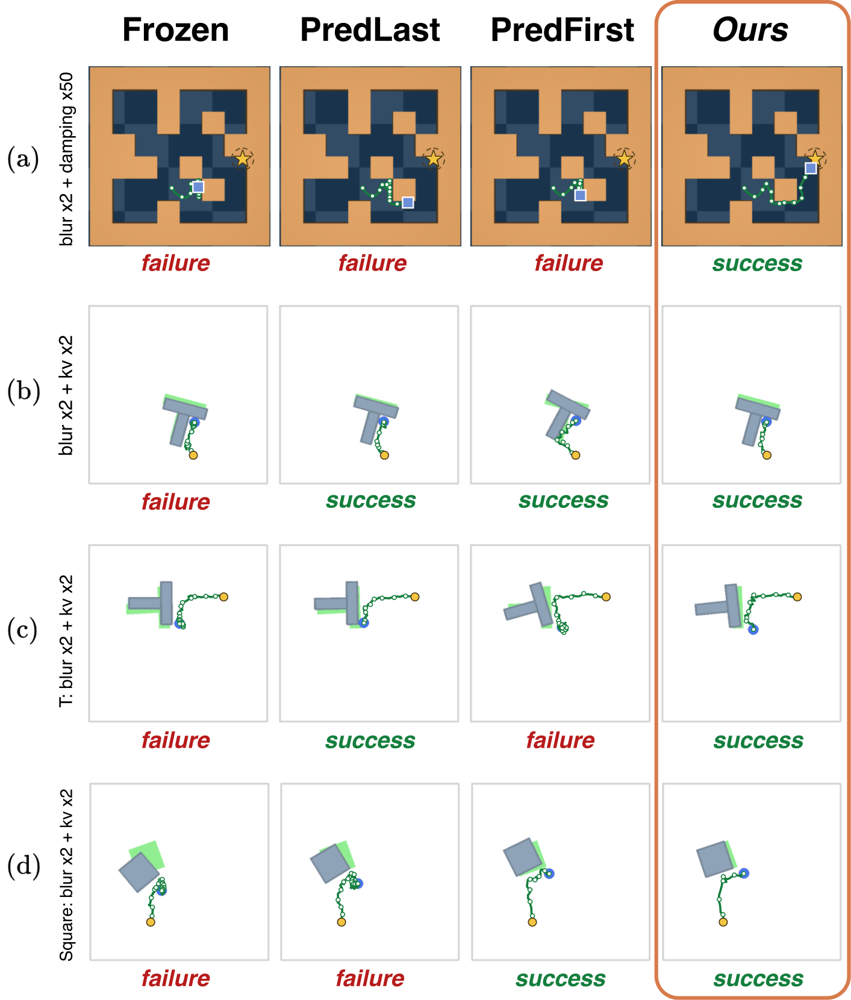

Sandwich-Residuals: Parameter-Efficient Test-time Adaptation of World Models

Abstract
Latent world models enable planning by predicting the effects of actions in a learned representation space, but their predictions can become unreliable when test-time conditions differ from training. Sandwich-Residuals keeps the pretrained world model frozen and learns only small residual corrections around the predictor. The residuals are optimized online using self-supervised prediction error and require no rewards, labels, or source-domain data. Across 21 conditions on the AdaJEPA benchmark, the method achieves 1.3× the success rate of the frozen model while retaining 95% of the strongest AdaJEPA variant’s performance and adapting 97–99% fewer parameters. The same principle also transfers to a DINO-WM model for 3-D manipulation.
Method
The pretrained encoders and predictor remain fixed. Small residual maps are placed at the predictor interfaces and trained from the five most recent observed transitions.
- 1.
Correct the inputs. Small residual maps adjust the visual, action, and proprioceptive embeddings before they enter the predictor.
- 2.
Keep the dynamics model frozen. The pretrained predictor processes the corrected embeddings without changing any of its weights.
- 3.
Correct the outputs. A second set of residuals adjusts the predicted latents before they are used for rollout and planning.
Results
Sandwich-Residuals recovers most of the benefit of internal-block adaptation while modifying far fewer parameters.
| Evaluation | Frozen | PredLast | PredFirst | Ours |
|---|---|---|---|---|
| 21 primary conditions | 49.2 | 63.4 | 68.2 | 65.0 |
| 7 compound shifts | 34.5 | 57.8 | 65.2 | 66.0 |
| DINO-WM / OGBench-Cube | 58.7 | 57.8 | 58.0 | 60.0 |
Mean success rate (%). Compound results are averaged over the seven reported conditions.
View full result tables
Table I · AdaJEPA primary conditions
Success rate (%), mean ± standard deviation over five seeds. pl: PredLast; pf: PredFirst. * indicates a shape unseen during training.
| Condition | Frozen | pl | pf | Ours | Δ |
|---|---|---|---|---|---|
| Medium Maze | |||||
| No shift | 80.8 ± 8.9 | 86.0 ± 5.8 | 84.0 ± 5.7 | 81.2 ± 6.7 | +0.4 |
| Damping 50× | 46.4 ± 3.8 | 52.0 ± 4.0 | 59.2 ± 3.0 | 66.0 ± 3.7 | +19.6 |
| Density 0.2× | 90.0 ± 4.5 | 86.4 ± 6.2 | 88.0 ± 7.7 | 88.4 ± 5.7 | −1.6 |
| Density 10× | 38.0 ± 5.1 | 39.6 ± 6.1 | 42.8 ± 4.6 | 40.4 ± 3.0 | +2.4 |
| Blur σ=2 | 83.2 ± 6.6 | 83.2 ± 6.4 | 84.0 ± 4.7 | 83.2 ± 7.7 | +0.0 |
| Average | 67.7 | 69.4 | 71.6 | 71.8 | +4.2 |
| Diverse Maze | |||||
| Unseen layouts | 45.6 ± 9.1 | 53.6 ± 6.1 | 62.8 ± 8.2 | 63.2 ± 11.0 | +17.6 |
| PushObj | |||||
| T | 50.4 ± 4.3 | 76.4 ± 3.0 | 79.6 ± 5.2 | 76.4 ± 6.5 | +26.0 |
| L | 47.6 ± 6.2 | 76.8 ± 3.0 | 77.2 ± 2.3 | 71.6 ± 7.3 | +24.0 |
| Z | 37.6 ± 8.9 | 72.8 ± 4.6 | 79.2 ± 6.7 | 70.4 ± 4.8 | +32.8 |
| Plus | 36.4 ± 5.5 | 72.0 ± 5.8 | 76.8 ± 6.4 | 70.4 ± 8.2 | +34.0 |
| I* | 24.8 ± 7.0 | 46.0 ± 9.4 | 43.2 ± 7.6 | 45.6 ± 8.9 | +20.8 |
| Small T* | 49.6 ± 4.6 | 65.6 ± 9.0 | 63.2 ± 8.8 | 62.4 ± 11.8 | +12.8 |
| Square* | 22.4 ± 7.1 | 40.0 ± 5.1 | 44.4 ± 7.0 | 39.2 ± 9.5 | +16.8 |
| Average | 38.4 | 64.2 | 66.2 | 62.3 | +23.9 |
| PushT | |||||
| No shift | 62.0 ± 6.0 | 75.6 ± 3.6 | 82.4 ± 2.6 | 77.6 ± 5.5 | +15.6 |
| Blur σ=2 | 50.4 ± 4.3 | 69.2 ± 5.8 | 82.8 ± 5.6 | 72.8 ± 4.1 | +22.4 |
| S&P noise 0.01 | 55.6 ± 4.1 | 70.4 ± 8.8 | 83.2 ± 2.3 | 72.0 ± 4.2 | +16.4 |
| Brightness 0.9× | 65.6 ± 7.1 | 74.8 ± 6.3 | 82.0 ± 4.2 | 73.6 ± 6.5 | +8.0 |
| Red agent | 50.0 ± 4.7 | 62.4 ± 6.1 | 74.0 ± 4.9 | 67.2 ± 3.3 | +17.2 |
| Red block | 14.0 ± 4.2 | 11.2 ± 4.1 | 10.0 ± 2.0 | 12.8 ± 1.8 | −1.2 |
| Red anchor | 29.6 ± 3.8 | 36.0 ± 5.7 | 43.2 ± 8.2 | 42.4 ± 3.3 | +12.8 |
| Controller kv 2× | 53.2 ± 5.4 | 80.8 ± 5.2 | 91.2 ± 3.0 | 88.4 ± 5.4 | +35.2 |
| Average | 47.5 | 60.0 | 68.6 | 63.4 | +15.8 |
| All 21 conditions | 49.2 | 63.4 | 68.2 | 65.0 | +15.8 |
Table II · Compound shifts
Success rate (%), mean ± standard deviation over five seeds.
| Condition | Frozen | pl | pf | Ours | Δ |
|---|---|---|---|---|---|
| Maze: blur σ=2 + damping 50× | 46.8 ± 7.8 | 54.0 ± 4.7 | 56.0 ± 4.0 | 65.6 ± 6.2 | +18.8 |
| Maze: blur σ=2 + density 10× | 38.8 ± 6.1 | 39.2 ± 3.6 | 37.2 ± 7.2 | 40.8 ± 3.0 | +2.0 |
| PushT: blur σ=2 + controller 2× | 40.4 ± 4.3 | 76.8 ± 3.3 | 87.6 ± 2.6 | 87.6 ± 3.0 | +47.2 |
| PushT: red anchor + controller 2× | 30.4 ± 4.3 | 42.4 ± 7.4 | 53.2 ± 4.1 | 51.2 ± 7.7 | +20.8 |
| PushT: blur + red anchor + controller 2× | 34.4 ± 8.6 | 41.2 ± 5.8 | 68.8 ± 6.7 | 59.6 ± 2.6 | +25.2 |
| PushObj T: blur σ=2 + controller 2× | 26.8 ± 3.0 | 84.8 ± 2.7 | 85.6 ± 3.3 | 87.2 ± 5.0 | +60.4 |
| PushObj Square: blur σ=2 + controller 2× | 23.6 ± 6.4 | 66.4 ± 8.6 | 68.0 ± 9.1 | 70.0 ± 9.1 | +46.4 |
Table III · Paired differences
Ours minus each baseline in percentage points, mean ± standard error.
| Subset | − Frozen | − pl | − pf |
|---|---|---|---|
| All 21 conditions | +15.8 ± 1.2 | +1.6 ± 0.7 | −3.2 ± 0.8 |
| Medium Maze | +4.2 ± 1.9 | +2.4 ± 1.6 | +0.2 ± 1.0 |
| Diverse Maze | +17.6 ± 1.2 | +9.6 ± 2.5 | +0.4 ± 4.3 |
| PushObj | +23.9 ± 1.7 | −1.9 ± 0.9 | −3.9 ± 1.5 |
| PushT | +15.8 ± 1.8 | +3.3 ± 0.9 | −5.2 ± 1.2 |
| Compound (7) | +31.5 ± 3.4 | +8.2 ± 1.3 | +0.8 ± 1.4 |
Table IV · OGBench-Cube with DINO-WM
Success rate (%), mean ± standard deviation over three seeds.
| Condition | Frozen | pl | pf | Ours |
|---|---|---|---|---|
| No shift | 62.7 ± 3.1 | 60.7 ± 3.1 | 64.0 ± 2.0 | 60.7 ± 5.0 |
| Light 0.3 | 58.7 ± 4.2 | 60.0 ± 4.0 | 58.7 ± 4.6 | 61.3 ± 5.0 |
| Camera 10° | 54.0 ± 5.3 | 51.3 ± 5.0 | 52.0 ± 5.3 | 56.0 ± 2.0 |
| Arm gain 0.5× | 59.3 ± 5.8 | 59.3 ± 5.8 | 57.3 ± 3.1 | 62.0 ± 2.0 |
| Average | 58.7 | 57.8 | 58.0 | 60.0 |
Table V · Residual-pathway ablation
Success rate (%), mean ± standard deviation over five seeds. Parentheses show change from the full model.
| Configuration | Medium Maze | PushT |
|---|---|---|
| Full | 65.6 ± 6.2 | 87.6 ± 3.0 |
| Without action residual | 63.6 ± 3.8 (−2.0) | 77.6 ± 3.0 (−10.0) |
| Without output residuals | 56.4 ± 2.2 (−9.2) | 72.0 ± 5.1 (−15.6) |
| Without input residuals | 64.4 ± 1.7 (−1.2) | 71.2 ± 1.8 (−16.4) |

Discussion and Conclusion
The experiments suggest that test-time mismatch does not always require changing the internal dynamics model. When the pretrained representation and transition structure remain useful, lightweight interface corrections can recalibrate the model for planning without explicitly identifying the changed system.
The useful correction pathway depends on the shift. Output-side correction is nearly sufficient in Medium Maze, whereas PushT benefits from jointly correcting the predictor inputs and outputs, especially the action pathway. Strong appearance changes remain more difficult because information distorted or lost inside the frozen visual encoder cannot always be recovered downstream.
The current evaluation is limited to simulation and approximately stationary within-episode shifts, and reducing the number of trainable parameters does not proportionally reduce gradient-computation cost. Even with these limitations, Sandwich-Residuals recovers substantial planning performance while updating only a small fraction of the parameters used by internal-block adaptation, showing that effective test-time adaptation need not modify the pretrained world model itself.
Citation
@misc{anonymous2026sandwich,
title = {Sandwich-Residuals: Parameter-Efficient
Test-time Adaptation of World Models},
author = {Anonymous},
year = {2026}
}